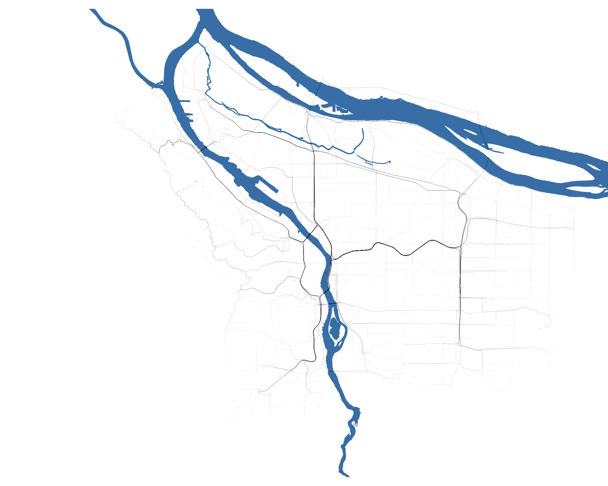

Show code
location="Portland Oregon"
border<-getbb(location)%>%
opq()%>%
add_osm_feature(key="border_type") %>%
osmdata_sf()
polygon<-border$osm_multipolygons[border$osm_multipolygons$name==sub("\\s+\\w+", "", location),]Hans Lehndorff
February 4, 2024
Utilizing accessible datasets, this study examines vehicular movement trends within a specific locale at a chosen time.
The case in point evaluates the traffic flow in Portland, Oregon, around 11 AM on October 10, 2023.
A primary tool in this study is the osmdata package, which offers a vast array of geographical information. The initial step involves outlining Portland’s geographic confines.
Subsequently, an R script is employed to pinpoint random start and end points within Portland’s limits to model a driving route. These coordinates then prompt a TomTom API request, yielding details including the optimal driving path connecting the points. This method is replicated for 1,000 pairs of random coordinates to simulate 1,000 different vehicular routes across the city.
# Function to generate random points within a polygon
generate_random_points <- function(polygon) {
min_x <- st_bbox(polygon)[1]
max_x <- st_bbox(polygon)[3]
min_y <- st_bbox(polygon)[2]
max_y <- st_bbox(polygon)[4]
random_points <- data.frame(
x = runif(100, min_x, max_x),
y = runif(100, min_y, max_y)
)
random_points <- st_as_sf(random_points, coords = c("x", "y"), crs = st_crs(polygon))
random_points <- random_points[st_within(random_points, polygon,sparse = F),]
# random_points<-st_coordinates(random_points)
my_latlon_df <- st_transform(random_points, crs = 4326)
output<-my_latlon_df%>%
mutate( lat= st_coordinates(my_latlon_df)[,1],
lon = st_coordinates(my_latlon_df)[,2]) %>%
data.frame() %>%
filter(1:n()==1) %>%
select(lat,lon)
return(output)
}
start<-generate_random_points(polygon)
end<-generate_random_points(polygon)
q<-paste0("https://api.tomtom.com/routing/1/calculateRoute/",
start$lon,"%2C",start$lat,"%3A",
end$lon,"%2C",end$lat,
"/json?maxAlternatives=0&computeTravelTimeFor=all&vehicleHeading=270&departAt=now&routeType=fastest&traffic=true&travelMode=car&key=","YOUR_KEY_HERE"
)
# output <- read_html(q) %>%
# html_text() %>%
# fromJSON()The compiled routes are visualized on a chart, with each route depicted as a subtle black line against the map backdrop. The map also features the blue-tinged rivers of Portland, sourced from the osmdata package. With all routes plotted, the principal traffic flows on October 10, 2023, just after 11 AM, emerge distinctly. A typical drive between two random spots in the city will likely incorporate a segment of the interstate highways. Notably, the study reveals that the swiftest path for some journeys involves a detour through Washington State before circling back to Portland.
water<-getbb(location)%>%
opq()%>%
add_osm_feature(key = "water") %>%
osmdata_sf()
ggplot() +
geom_sf(
data = water$osm_multipolygons[water$osm_multipolygons$water%in%c("river"),],
inherit.aes = FALSE,
fill = "steelblue",
color = "steelblue",
alpha = 1
) +
geom_path(data=travel,aes(y=latitude,x=longitude,group=request_id),alpha=10/n_distinct(travel$request_id),color="black")+
coord_sf(
xlim = range(travel$longitude),
ylim = range(travel$latitude),
expand = T,
clip = "on")+
theme_void()